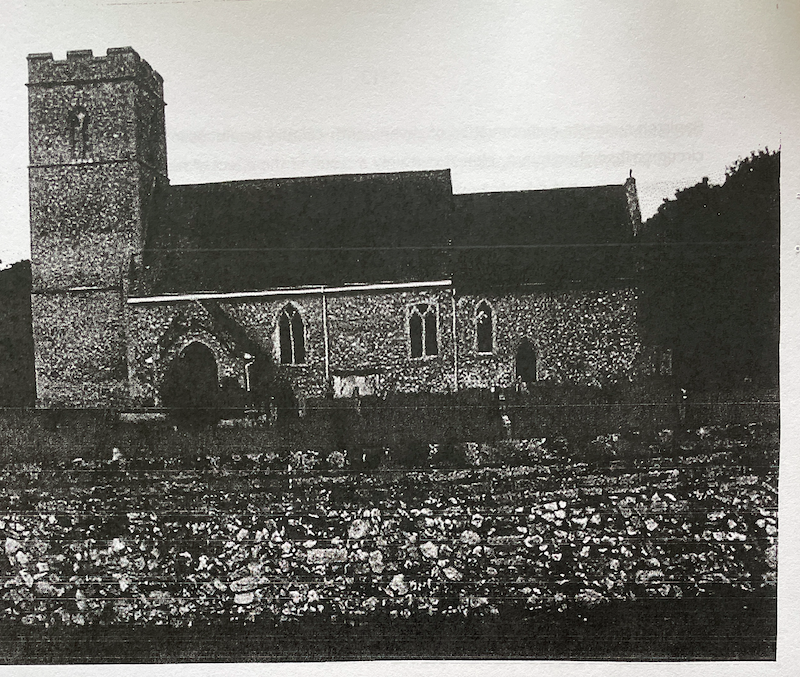
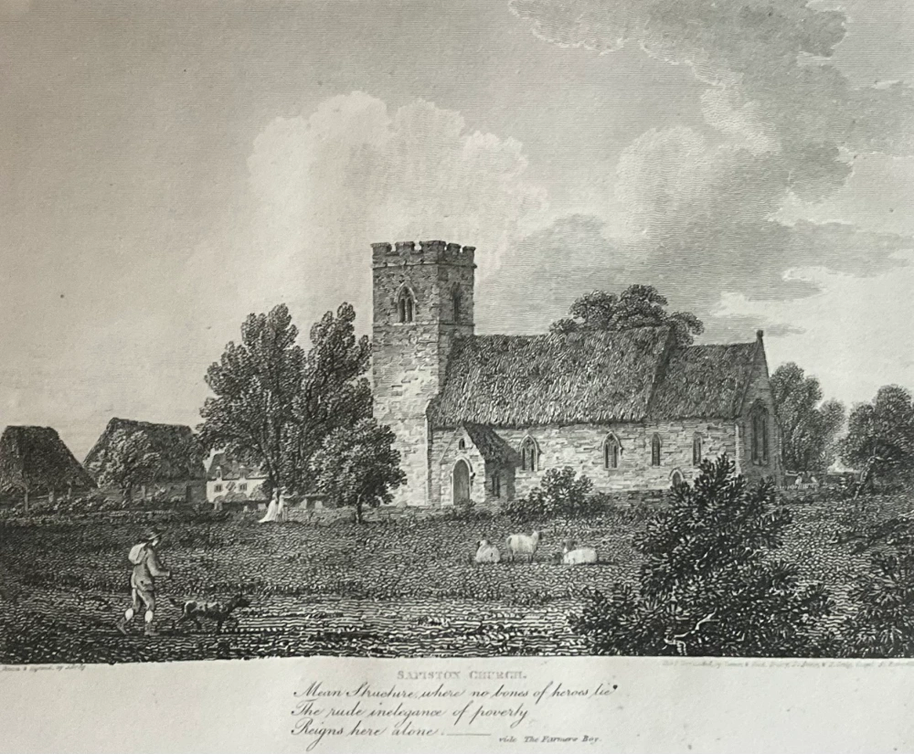

‘The rude inelegance of poverty / Reigns here alone’: Robert Bloomfield’s Portrait of St Andrew’s church, Sapiston, in The Farmer’s Boy, by Angus Whitehead
It [1] is well established that both the context and many elements of the content of Robert Bloomfield’s poem The Farmer’s Boy (completed April 1798) derive from the poet’s own boyhood experiences two decades earlier: the five years spent working as a labourer on his maternal uncle William Austin’s farm at Sapiston, North Suffolk from the ages of 11 to 14. However, claiming that in The Farmer’s Boy Bloomfield ‘says very little about his origins, his education, his early life and work’, John Lucas has described the poem as ‘a backward-glancing presentation of rural circumstance provid[ing] us with a vision of tranquility, of human comfort and harmony, a kind of discreetly utopian account of the “natural” world very far removed from the contentious actualities of the moment.’ [2] Conversely, Simon White suggests that, ‘[t]he poem that resulted from this act of recall is not the straightforward idealization of life in rural Suffolk it is often said to be.’ [3] Expanding upon White’s suggestion the following note discusses a short passage from ‘Autumn’, Book III of The Farmer’s Boy, in which Bloomfield draws upon identifiable details of his working life at Sapiston. My reading of this passage suggests that parts of Bloomfield’s first major poem do engage with the ‘contentious actualities’ of agricultural life in North Suffolk during the late 1770s. Lucas suggests that in several passages in ‘Summer’, the second section of The Farmer’s Boy, Bloomfield represents the present as contentious by contrasting the past (presumably Sapiston in the 1770s) with the present (the late 1790s). [4] in discussing lines 78-99 of ‘Autumn’, I will argue that Bloomfield’s careful deployment of ‘little particulars’ [5] in representing his youth at Sapiston twenty years later reveals the Euston estate about the late 1770s not as the site of ‘a vision of tranquility’, but rather a far from utopian past, already manifestly impacted upon by enclosure and other improvements.
In October 1797, during the period in which he was composing The Farmer’s Boy, Bloomfield wrote to his mother, recalling his period of employment on his late uncle’s farm:
It is sixteen years last June since I washed my old hat in the Horse-pond and sold my smock for a shilling to Sam Shelver’s boy, and set off to London to turn shoemaker, and I always remark that though I am acquainted with the principle [sic] alterations and deaths and changes, children grown to Men and Women since, &c, the first thought that is, I mean whenever not thinking of other things my mind returns to the country, for the first moment, it always presents the old picture. I see my uncle master of the farm instead of my cousin, and can see in imagination my old neighbours and things just as they were [6]
After completing the poem, in a letter to an unidentified bookseller, Bloomfield described how he wrote the poem ‘intending it as a present to an aged mother now living on the spot; to whom the Church, the Mad Girl, the Farm-house, and all the local circumstances of the piece are intimately known.’ [7] In The Farmer’s Boy, then, it appears that Bloomfield is consciously drawing upon vivid memories of his working life at Sapiston. [8]
In ‘Autumn’, the penultimate section of The Farmer’s Boy, Bloomfield describes the ‘Sabbath’ as a period of general leisure for the rural community, with one noted exception:
Kind rest extends to all;...save one poor beast
That true to time and an[d] place, is doom’d to plod
To bring the Pastor to the House of God
Mean structure where no dust of Hero’s lie
The rude inelegance of poverty
Reigns here alone: else why that roof of straw?
Those narrow windows with the frequent flaw?
O’er whose low cells the dock and mallow spreads
And rampant nettles lift their spiry heads
Whilst from the hollows of the tower on high
The greycap’d Daws in saucy legions fly.
Round these lone walls assembling neighbours meet
And tread departed friends beneath their feet
And new-brier’d graves that prompt the secret sigh
Shew each the spot where he himself must lie. [9]
Several reviewers of The Farmer’s Boy singled out this passage for particular praise. The British Critic described ‘the village meeting on a Sunday’ as ‘very picturesque’ and The Monthly Visitor judged ‘the church and the church-yard’ as ‘very happily described’. [10] More recently, Mina Gorji has suggested that the passage contains poignant echoes of Thomas Gray’s ‘Elegy Written in a Country Churchyard’. [11] Gorji’s reading especially might suggest that Bloomfield here is deliberately deploying a general and rather derivative description of a country churchyard. But a closer reading informed by newly uncovered details of the socio-historical context of Bloomfield’s immediate surroundings as a child employee on Austin’s farm during the late 1770s suggests that Bloomfield is rather drawing upon the specific and peculiar details of his ‘second’ local village church, notably its diminutive size, genuine antiquity, and remoteness. Nevertheless, despite Bloomfield’s attempts to provide a historically and geographically specific account of Sapiston c. 1780, the pervading influence of Gray’s ‘Elegy’ meant that contemporary reviewers experienced difficulties seeing beyond Gray’s poem and appreciating Bloomfield’s close observations. The British Critic’s sense that the description of the church is ‘very picturesque’ works in much the same way: picturesque viewing is so ingrained by the turn of the century that it is difficult for critics to distinguish between a close observation of a specific locale and a generalized evocation of a country churchyard in the modes of either Gray’s ‘Elegy’ or the Picturesque. I hope the following setting of Bloomfield’s Sapiston church passage in a detailed historical context will help throw into relief Bloomfield’s close observation through memory of a village in transition in the late 1770s.
As the writer of A Concise Description of Bury St Edmund’s and Its Environs (1827) recognized, in this passage, Bloomfield is describing Sapiston’s parish church of St Andrew. [12]
Illustration 1. Sapiston Church, August 2008 (Angus Whitehead).
Up until the middle of the fourteenth century the village of Sapiston lay to the east of, and in close proximity to the church. About 1350, the village removed several hundred metres north, leaving the small church and a nearby farm in their original location, isolated among fields of pasture. William Austin’s farm appears to have been built on or near the site of this medieval farmhouse. [13] Before the building of a new rectory closer to St Andrews about 1866, the incumbent minister almost certainly lived in Sapiston village at some distance from the old church. [14] The secluded location of St Andrew’s informs Bloomfield’s description of the church’s ‘lone walls’ (‘Autumn’ line 100) and his suggestion of the distance to and from ‘the house of God’ that the Pastor’s ‘poor beast […] is doom’d to plod’.
Jonathan Lawson describes these lines as ‘a bit of humour’ and ‘whimsically humorous irony. [15] However, topographical evidence suggests the passage is borne of a memory based on close observation, a clergyman’s horse unlike other animals in the community denied rest on the Sabbath, echoing Bloomfield’s sentiments of sympathy for poorly treated horses and other animals expressed elsewhere in The Farmer’s Boy. [16] The ‘Pastor’ referred to here can be identified as Robert Andrews who in 1730 was presented the curacy at St Andrew’s, Sapiston by Charles FitzRoy, second Duke of Grafton (1683-1757), Lord Chancellor and grandfather of William Austin’s landlord and Bloomfield’s future patron, Augustus Henry FitzRoy, third Duke of Grafton. [17] Andrews had been incumbent at St Andrews for almost 50 years and must therefore have been over 70 years old when the eleven-year-old Bloomfield was first employed at Austin’s farm in 1777. [18] Andrews’ advanced age might have necessitated his arrival on horseback and could perhaps explain Bloomfield’s reference later in the ‘Autumn’ section of The Farmer’s Boy to the ‘tedious service’ on Sundays at St Andrews. [19] But the passage may also suggest some hint of class distinction between the pastor and his congregation. The fact that only ‘one poor beast’ is doomed to work on the Sabbath at Sapiston suggests that only the pastor rides to church and therefore is the sole member of the gentry now attending the church and that the labouring-class congregation, including Giles’ master, arrives on foot. [20] Bloomfield’s focus in this passage is upon the horse rather than the pastor. It is almost as if it is the horse rather than the pastor’s will that brings the latter to church. Bloomfield seems to hint at the pastor’s virtual absence from his labouring-class parishioners’ lives. Thus Bloomfield’s treatment of the pastor here appears to have more in common with George Crabbe’s ‘contemporary’ description of the absent ‘busy priest’ in Book I of The Village than with Oliver Goldsmith’s nostalgic reference to the ever visible ‘village preacher’ in The Deserted Village. In the passage cited above, Bloomfield describes the church as a ‘[m]ean structure’ exhibiting the ‘rude inelegance of poverty’ not evident elsewhere. St Andrew’s is a diminutive pre-Norman church, lacking the fifteenth century remodelling evident in neighbouring churches in Suffolk. The nave is too narrow for a central aisle and there is capacity for no more than 100 worshippers. [21] By the 1770s Sapiston had a population of almost 200. [22] Thus during Bloomfield’s childhood the church was old, simple, and inadequate for contemporary needs.
White has recently suggested that scholars of Bloomfield should ‘consider the impact of the poet’s London life upon The Farmer’s Boy’. [23] Indeed, during his period of composition of The Farmer’s Boy (May 1796-April 1798), Bloomfield’s recollections of this small rural church two decades earlier may have been coloured by over fifteen years of worshipping at different, and on occasion far more elegant churches in the metropolis such as the Unitarian church in Old Jewry and St Paul’s Cathedral. [24] However, while still a ‘farmer’s boy’, the adolescent Bloomfield might have made comparison between the ‘mean structure’ at Sapiston with the nearby church of his birthplace and childhood, All Saints, Honington, at which his mother was a regular worshipper. All Saints is considerably larger and was almost certainly better maintained than St Andrew’s. Its features include larger and more ornate windows and porch, as well as a wall painting of St Thomas of Canterbury. [25] In the same passage Bloomfield observes that at St Andrew’s ‘no dust of Hero’s lie’. Indeed, unlike St Paul’s cathedral, St Andrew’s, without a crypt, contains no remains of ‘Hero’s’ past or present. [26] The church does feature a wall memorial to landowner John Bull and ledger slabs to members of the Aldham family, owners of the manor at Sapiston. These date from the first half of the seventeenth century, before the building of Euston Hall and the creation of the surrounding estate by Henry Bennett, Earl of Arlington about 1666, later inherited by his grandson, Henry Fitzroy, illegitimate son of Charles II and First Duke of Grafton about 1675. [27] However, these indicators of gentry formerly present at Sapiston do not feature in Bloomfield’s representation of Sapiston in The Farmer’s Boy. Bloomfield’s reference to St Andrew’s ‘roof of straw’ is consistent with J. Storer’s 1806 engraving of the church.
Illustration 2. ‘SAPISTON CHURCH’ by J. Greig in E. W. Brayley, Views of Norfolk, Suffolk, and Northamptonshire, Illustrative of the Works of Robert Bloomfield (London, 1806) (Collection of Angus Whitehead).
As late as 1855 William White described Sapiston church as ‘an ancient thatched fabric.’ [28] But Bloomfield’s observation that: ‘The rude inelegance of poverty/Reigns here alone: else why that roof of straw?’ seems troubling. Most buildings in the vicinity would have featured thatched roofs, including William Austin’s nearby farmhouse and Bloomfield’s mother’s house and All Saints church in neighbouring Honington. [29] However, other details of Bloomfield’s description are clearly recognizable from a present day exploration of St Andrews. The description of ‘narrow windows with the frequent flaw’ alludes to the thin thirteenth-century traceried lancet windows of clear glass visible on the north and south sides of the church. [30] Bloomfield’s reference to the ‘hollows of the tower on high’ refers to the double belfry windows in Sapiston church’s early fourteenth-century square embattled western tower. [31] Bloomfield observes that at ‘sermon time’, ‘Round these lone walls assembling neighbours meet/ And tread departed friends beneath their feet’. [32] A reviewer in The British Critic describes the ‘assembling neighbours’ as a ‘village meeting’. [33] Greig’s 1806 engraving of St Andrew’s, Sapiston reveals a very small churchyard area surrounded by a wicket fence, surrounding an area far smaller than the walled churchyard in evidence today [compare illus. 1 and 2]. Economic considerations may have motivated the Duke of Grafton and his stewards to utilize as much of his estate as possible. [34] Therefore potential churchyard space was used as sheep pasture. [35] In such circumstances, as Lawson has observed, Sapiston churchgoers had little choice but to step on friends’ graves, and reflect on the fact that they themselves would in all probability not lie beside their dead friends, but replace them. [36] Bloomfield’s description of the meeting of labouring-class parishioners in St Andrew’s churchyard concludes with an allusion to ‘new-brier’d graves that prompt the secret sigh/ Shew each the spot where he himself must lie’.[37] In their notes to their edition of Bloomfield’s Selected Poems, John Goodridge and John Lucas suggest that perhaps the graves are briared ‘as a protection against body snatchers.’ [38] However, an article in Time’s Telescope for 1829 indicates a different purpose: ‘The shoots of the bramble are used to briar graves in churchyards, to protect them from cattle.’ [39] This seems particularly apposite at Sapiston, a church surrounded by sheep-grazing pasture, and horses were occasionally tethered in the churchyard. [40] In Beauties of the Scottish Poets; or Harp of Renfrewshire (1821) in an annotation to Sherrif’s song ‘Adown the Green Dell’ (which includes the line ‘On the brier-bound grave of my dear’) the editor of the anthology notes ‘We were much pleased’ says a Pedestrian Tourist, ‘with the neat appearance of some of the more remote villages in the south of England: – the graves were firmly laced with a kind of basket-work of briers, brambles &c. many of these had taken root, and being kept in order, cast even a cheerful look over the silent mansions of the dead, and evinced, on the part of the survivors, an affectionate regard for the memory of departed relatives; which in too many instances we find cease the moment they are consigned to “the dark and narrow house.”’ [41]
Although by the first decades of the twentieth century the practice of briaring appears to have been long abandoned and forgotten, [42] the practice dates back to before the mid-seventeenth century when Jeremy Taylor wrote in The Rules and Exercises of Holy Dying (1651): ‘[…] the summer gives green turf and brambles to bind upon our graves […] and you can go no whither but you tread upon a dead man’s bones’. [43] The fact that this practice continued among the labouring poor of Sapiston suggests a continuation of seventeenth-century traditions in spite of the circumscribed churchyard, almost certainly a result of the effect of recent agricultural improvements on the Euston estate. [44]
In this exploration of the specific context of the poet’s portrait of St Andrew’s, Sapiston, I hope I have demonstrated that this section of Bloomfield’s ‘Autumn’ is not merely a generalized, derivative paean to a pastoral past, but rather a detailed portrait from memory of Sapiston church, c. 1779. Bloomfield’s portrait is inextricably linked to the contentious actualities of life on the modernized Euston Estate, an agricultural milieu already in the process of rapid change during the late 1770s. If Bloomfield writing in the late 1790s exhibits nostalgia here, it is often a nostalgia for the surviving remnants of an agricultural life and its traditions that pre-date the arrival of the FitzRoy family and which survived, despite agricultural developments, into the poet’s childhood and employment by his uncle William Austin.
Angus Whitehead is Assistant Professor at the National Institute of Education, Singapore. His note ‘The Poet Angling’ appeared in Newsletter no. 19.
NOTES
1 I wish to thank Hazel Mary Whitehead for her assistance in researching this note and Andrew James Smith and Ken Davies for their comments on an earlier draft of the note. BACK
2 John Lucas, ‘Bloomfield and Clare’, John Goodridge, ed., The Independent Spirit: John Clare and the Self-taught Tradition (Helpstone, 1994), 57 and 59. Lucas goes on to describe Bloomfield’s representation of a ‘society of mutuality’, a past ideal that is prelapsarian and innocent of enclosure, and posits this as the reason Bloomfield became for Clare and other readers ‘our English Theocritus’ (see Lucas 62-3). As I suggest below, while this may have been Bloomfield’s ideal, it is not the world he is consistently describing throughout The Farmer’s Boy. BACK
3 Simon White, Robert Bloomfield, Romanticism and the Poetry of Community (Aldershot, 2007), 30. BACK
8 Bloomfield’s patron, Augustus Henry FitzRoy, third Duke of Grafton, appears to have recognized the `local circumstances’ portrayed in The Farmer’s Boy, notably William Austin, Bloomfield’s uncle and employer. In February 1800, Grafton wrote to Capel Lofft, ‘The character [Bloomfield] has given was well deserved by William Austin’. Cited Capel Lofft, letter to George Bloomfield, 1 March 1800. BACK
10 The British Critic and Quarterly Theological Review (June 1800), 605; The Monthly Visitor (March 1802), 228. BACK
11 See Mina Gorji, ‘Burying Bloomfield: Poetical Remains and “the unlettered muse”,’ Simon White, John Goodridge, and Bridget Keegan eds., Robert Bloomfield: Lyric, Class, and the Romantic Canon (Lewisburg, 2006), 242-3. BACK
12 Anon., A Concise Description of Bury St Edmund’s and Its Environs (London, 1827), 284. See also The Suffolk Literary Chronicle (October 1838), 8. Sapiston lies east of and adjacent to the village of Honington, Bloomfield’s birthplace and parental home, separated by the River Blackbourne (in fact a small stream), a tributary of the River Ouse. Contemporary engravings of ‘The Farm House At Sapiston’ by J. Storer and `Sapiston Church’ by J. Greig appear in E. W. Brayley, Views of Norfolk, Suffolk, and Northamptonshire, Illustrative of the Works of Robert Bloomfield (London, 1806). BACK
13 See Brayley, 31; William Wickett and Nicholas Duval, The Farmer’s Boy (Lavenham, Suffolk: Terence Dalton Limited, 1971), 11. BACK
14 See Syd Thurlow, Village Life and Folk Remembered (Sapiston: Syd Thurlow, 2004), 36. BACK
15 Jonathan Lawson, Robert Bloomfield (Boston: Twayne Publishers, 1980), 84. BACK
16 See for example Bloomfield’s descriptions of the docked ‘Poor patient Ball’ in ‘Summer’, lines 205-16, and Dobbin and the post horse in ‘Winter’, lines 155-212. For a discussion of Bloomfield in the context of contemporary writings on animal rights, see White, 27-8, 47-8. BACK
18 Andrews had married Bloomfield’s parents at Sapiston in June 1755. See Wickett and Duval, 9; International Genealogical Index. He also officiated when Austin married Bloomfield’s maternal aunt, Judith Manby at Sapiston church in 1759 (IGI). Andrews died in 1784, 14 years before Bloomfield completed The Farmer’s Boy. See A Concise Description of Bury St Edmund’s and Its Environs, 285. Bloomfield briefly returned to his birthplace of Honington during that year (see ‘Preface’, Robert Bloomfield, The Farmer’s Boy (London: Vernor and Hood, 1800 [third edition]), xv). William Austin was baptized 11 November 1734 at Sapiston Church (IGI). He was therefore in his mid-forties during the period 1777-81 recollected by Bloomfield in The Farmer’s Boy. BACK
20 Iron rings on the eastern wall of St Andrew’s church suggests that in earlier periods members of the congregation did ride to church, leaving their horses tethered in the surrounding churchyard (see Roy Tricker, St Andrew’s Church, Sapiston, Suffolk (London, 2005), 3). The Pastor represented in the passage from ‘Autumn’ discussed in this note, apparently does not attend the ‘harvest home’ portrayed in ‘Summer’. However, the May day poetry competition held by Sir Ambrose Higham at Oakly Hall in Bloomfield’s last volume of poetry, May Day with the Muses (1822) begins with a blessing from Higham’s ‘venerable chaplain’. Surviving wall memorials in St Andrew’s church (see Tricker, 7) suggest that members of the gentry were resident at Sapiston, attending services at St Andrew’s church during the mid-seventeenth century. It might be argued that these memorials bear testimony to earlier social cohesion between the labouring class and the gentry, celebrated in Bloomfield’s ‘The Broken Crutch’. Bloomfield may have connected the Fitzroy family’s acquisition of the Euston estate about 1670 and the consequent disappearance of a visible gentry at Sapiston with the disappearance of formerly cordial and direct social intercourse between nobility, gentry and the labouring class. BACK
21 Rubble walls and `[s]ections of layered masonry indicate that this is an early structure’ (Tricker, 2). `Most of the visible features date from the late-thirteenth and early fourteenth-century remodelling, with hardly any of the fifteenth-century work usually so prominent in East Anglian churches.’ [ibid]. BACK
22 I base this figure on the fact that just over twenty years later (1801) Sapiston had a population of approximately 207. See James Bell, A New and Comprehensive Gazetteer of England and Wales (Glasgow, 1835), vol. III, 407. BACK
24 See Capel Lofft, ‘Preface’, to The Farmer’s Boy; Robert Bloomfield, ‘To My Oak Table’, see especially lines 73-84. There may therefore be some retrospective irony in Bloomfield’s describing St Andrew’s diminutive tower as ‘on high’. BACK
25 However, like St Andrew’s, All Saints’ Church, Honington, had a `roof of straw’. All Saints’ is perhaps referred to obliquely in The Farmer’s Boy in the lines ‘the distant chime / Of sabbath bells he hears at sermon time / That down the brook sound sweetly in the gale / Or strike the rising hill or scim the dale.’ Bloomfield is referring here to the sound of the bells of nearby St Andrew’s travelling over the fields and River Blackbourne, a tributary of the Ouse that separates Sapiston and Honington. It is perhaps significant that the bells of the much nearer St Andrew’s are not mentioned. The young Bloomfield would almost certainly have encountered the more recent and even more ornate FitzRoy family church of St Genevieve in Euston Park. BACK
26 The first and second Dukes of Grafton are interred at St Genevieve’s. BACK
27 The author of A Concise Description of Bury St Edmund’s and Its Environs (285) notes seventeenth century monuments to members of the Bull, Crofts and Aldham families. BACK
28 William White, History, Gazetteer and Directory of Suffolk (Sheffield, 1855), 729. BACK
29 See J. Storer’s engravings ‘The Farm House at Sapiston’ and ‘Honington Church and the cottage in which Robt Bloomfield was Born’ in E. W. Brayley, Views. BACK
30 Curiously, what might strike a twenty-first century visitor as the more aesthetically pleasing aspects of both the exterior and interior of St Andrew’s, for instance the twelfth-century south doorway and font (see Tricker, 2-6) do not feature in Bloomfield’s exterior description of the church and churchyard. BACK
31 See Thomas Kitson Cromwell, Excursions in the County of Suffolk (London, 1818), vol 1, 107. Syd Thurlow recalls during his boyhood at Sapiston in the 1920s, a century and a half on after the period Bloomfield recollects in The Farmer’s Boy, ‘The Church tower was full of owls, jackdaws and pigeons.’ Thurlow, Village Life and Folk Remembered, 13. BACK
33 The British Critic and Quarterly Theological Review (June 1800), 605. BACK
34 See Arthur Young, General View of the Agriculture of the County of Suffolk, 3rd edn (London, 1804), 269. See also Nathaniel Bloomfield, An Essay on War (London, 1803), xviii-xix, 29-40 (esp. 36). Although `Elegy on the Enclosure of Honington Green’ laments principally the enclosure of a small section of common land at Honington c. 1800, Nathaniel Bloomfield’s poem recalls the impact of earlier policies of enclosure at Euston upon the labouring poor c. 1775. BACK
35 In his ‘Wye Journal’ (1807) Bloomfield describes a churchyard at Hay: `[.. .] it was a beautiful, sad, impressive sight which will make me detest the unhallowed mob of bones in Bunhill Fields more than I ever did before: let me be buried any where [sic] but in a crowd’. BACK
36 See Lawson, 84. On 27 December 1789 George Bloomfield wrote to Robert Bloomfield ‘I went last Monday to Honington, and saw poor little Isaac interred […] In digging his grave, they took up what time had left of the coffin, &c. of my brother John.’ See George Bloomfield to Robert Bloomfield, 27 December 1789. BACK
37 Although Bloomfield appears to have remained largely forgotten throughout the twentieth century, it is intriguing that Bloomfield’s line ‘Shew each the spot where he himself must lie’ is perhaps unconsciously echoed by a line in Philip Larkin’s own reflection on imminent mortality, `Aubade’: ‘Unresting death, a whole day nearer now, / Making all thought impossible but how / Where and when I shall myself die’. Philip Larkin, Collected Poems (London, 1990), 208. Barry Cambray Bloomfield, Larkin’s bibliographer, was a descendant as well as a bibliographer of Bloomfield. BACK
38 Selected Poems of Robert Bloomfield, 183. The practice is also alluded to in Samuel Jackson Pratt’s poem ‘Tears of Genius: Occasioned by the Death of Dr. Goldsmith’(1774): […] Th’briar-bound graves shad’wing with fun’ral gloom […]’ Oliver Goldsmith, The Poetical Works, Complete, of Oliver Goldsmith (London, 1816), xliv. See also shoemaker poet James Woodhouse’s ‘Talamon and Colinet: A Pastoral Elegy’: ‘[…] o’er his grave, / With vulgar turf and twisted brier bound […]’ James Woodhouse, Poems on Several Occasions (London, 1766), 133. Sapiston’s remoteness from any major city makes Goodridge and Lucas’s body snatcher theory seem highly unlikely. BACK
39 ‘The Naturalist’s Diary for October 1829’, Times Telescope for 1829; or A Complete Guide to the Almanack (London, 1829), 371. BACK
40 In such an isolated area the threat of foxes and badgers disturbing new graves may also have been a consideration. BACK
41 Beauties of the Scottish Poets; or Harp of Renfrewshire (Glasgow, 1821), 424. BACK
42 A 1921 contributor to Notes and Queries suggests briaring was ‘a passing custom so to treat graves.’ J.T.F., ‘Grave to be turfed and “bryered”‘, Notes and Queries, 12 S, IX, Nov. 26, 1921, 431. BACK
43 William Hale, ed., Jeremy Taylor, The Rule and Exercises of Holy Dying (London, 1838), 4. BACK
44 Indeed responsibility for the neglected state of St Andrew’s church and churchyard in the late 1770s can feasibly be attributed to the third Duke of Grafton: whereas preferment for All Saints, Honington was the responsibility of the crown, St Andrew’s was under the gift of the Graftons (see Tricker, l). By the date Bloomfield composed the poem, his uncle William Austin, his aunt Judith Manby Austin, and several of their children had been buried in Sapiston churchyard. George Bloomfield recalled of William Austin about 1798 ‘I saw numbers of the husbandmen in tears when he was buried. He was beloved by all who knew him.’ Letter to Capel Lofft, cited in ‘Preface’, Robert Bloomfield, The Farmer’s Boy. A passage in ‘Summer’ preceding Bloomfield’s description of Sapiston church and churchyard, reads like a eulogy to his late uncle and former employer: ‘good old Master […] / Heav’n bless his memory! Bless his honour’d name! / The poor will speak his lasting worthy fame’. BACK
‘The rude inelegance of poverty / Reigns here alone’: Robert Bloomfield’s Portrait of St Andrew’s church, Sapiston, in The Farmer’s Boy, by Angus Whitehead